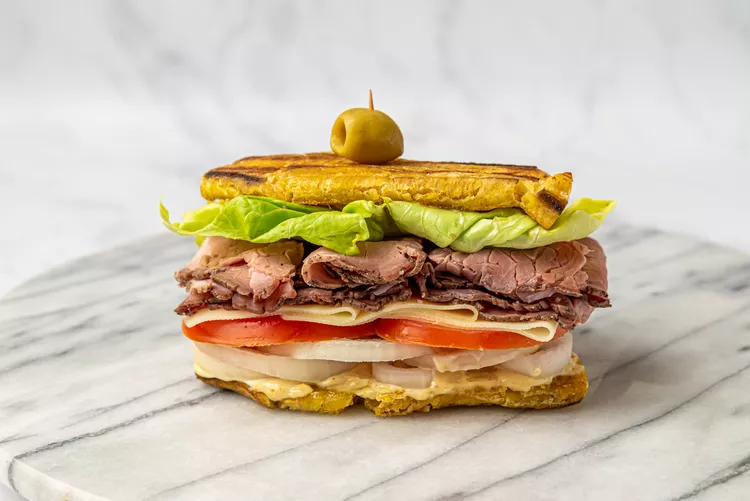

plantain sandwich

Looking for a sandwich
Jibarito is an authentic Puerto Rican sandwich made out of flattened, fried green plantains instead of bread.
Ingredients
For the steak:
- 1/2 lb skirt steak, trimmed of fat
- 1 packet sazón
- 1 teaspoon adobo
- 1/2 teaspoon garlic powder
- 1/4 teaspoon black pepper
- 6 oz beer (optional)
For the plantains:
- 2 green plantains
- Vegetable oil, for frying
- Salt
Suggested toppings:
- Cheese
- Lettuce
- Tomato
- MayoKetchup
Instructions:
For the steak:
- Tenderize the skirt steak by pounding with a meat mallet tenderizer. Season with sazón, adobo, garlic powder and black pepper. If using beer, place seasoned meat in a ziploc bag, cover with beer and marinate in the refrigerator for at least 20 minutes.
- Grill steak over high heat until medium-rare or medium, about 4-5 minutes per side. Remove from heat and let steak rest for 5-10 minutes, then slice into strips against the grain.
For the plantains:
- In a large frying pan, heat vegetable oil over medium-high heat until shimmering. Oil should be at least 1 inch deep.
- Slice the ends off the plantains. Run a knife down the length creating a shallow incision. Pry open skin to peel. Slice plantains in half.
- Fry in hot oil (about 350°F) until softened, but not browned, about 5-7 minutes per side. They will pierce easily with a fork when soft.
- Remove from oil and flatten each piece to 1/4-inch thickness. This can be done with the bottom of a heavy plate or pan. Return to oil and fry again on each side until crispy and golden yellow, about 1-2 minutes per side. Drain on paper towels and sprinkle with salt while hot.
Assembly:
- Place half the steak on a slice of plantain, along with cheese, lettuce, tomato and mayoketchup. Top with another plantain to form a sandwich. Repeat with remaining steak and plantains.